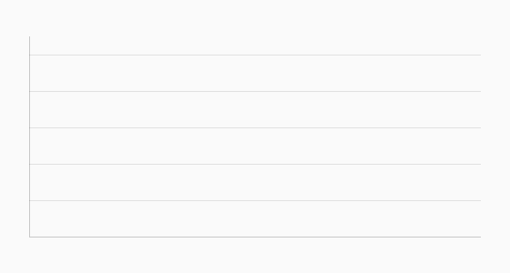
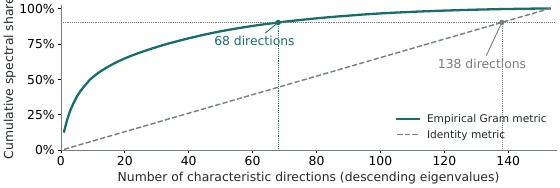
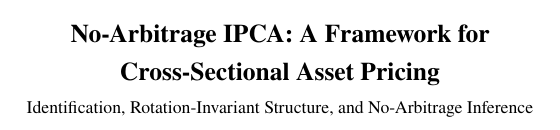

Mingyang Liu
求职论文 特征库与投资组合决策（英文）

我研究的是从估计一个基于特征的因子模型，到用它选择股票持仓之间的那一步：投资规则的输入，而不只是模型的预测，如何塑造投资者最终的持仓。图 1 画出了其中一项输入：132 个股票特征的几何结构，从 1973 年 6 月到 2024 年 11 月逐月变化。1
我的求职论文《特征库与投资组合决策》（英文）表明，重复或重新缩放已有的股票特征，可以在不增加任何信息的情况下改变一个经过调参的投资规则。《特征几何与投资组合选择》（英文）发现，几乎相同的预测会生成不同的投资组合，因为对因子方差的固定调整在不同的度量约定下施加了不同的暴露惩罚；去掉这一调整，权重差距几乎消失。《因子模型中的特征空间度量》（英文）从这样一个事实出发：基于特征的因子模型可以对收益给出完全相同的拟合，却以不同方式把收益归因于潜在因子、可观测因子和截距；论文说明特征空间上的内积如何选定这种分解。两篇工作论文都源自我的博士论文《无套利 IPCA》（英文），它为高维特征空间中的几何感知资产定价建立了一个框架。
研究
以下论文页面目前只有英文版；标有“（英文）”的链接指向英文页面。
特征库与投资组合决策 （英文）
重复或重新缩放已有的股票特征，可以在不增加任何信息的情况下改变一个经过调参的投资规则。

特征几何与投资组合选择 （英文）
几乎相同的预测会生成不同的投资组合，因为对因子方差的固定调整在不同的度量约定下施加了不同的暴露惩罚；去掉这一调整，权重差距几乎消失。

因子模型中的特征空间度量：识别与推断 （英文）
基于特征的因子模型可以对收益给出完全相同的拟合，却以不同方式把收益归因于潜在因子、可观测因子和截距三个部分。

无套利 IPCA：横截面资产定价的一个框架 （英文）
本论文为高维特征空间中的几何感知资产定价建立了一个框架。
论文页面（英文） · 论文 PDF 可应要求提供

联系方式
| 单位 | 帝国理工学院商学院 |
| 简历 | 简历 |
图 1 如何编码度量。 对月份 t，记 s_t 为 132×132 滚动特征 Gram 度量的首特征值占比，d_t 为其参与维数；令 u_t = \min\{1, \max\{0, (s_t - 0.1176)/(0.1521 - 0.1176)\}\}，v_t = \min\{1, \max\{0, (d_t - 17.36)/(22.63 - 17.36)\}\}，其中上下界是 618 个月样本中的最小值和最大值。于是 \text{ratio}_t = 1.4 + 2.6\,u_t，\text{size}_t = 0.85 + 0.30\,v_t，\lambda_1 = \text{size}_t\sqrt{\text{ratio}_t}，\lambda_2 = \text{size}_t/\sqrt{\text{ratio}_t}。椭圆是 M_t = \operatorname{diag}(\lambda_1^2, \lambda_2^2) 的单位球，半轴为 1/\lambda_1 和 1/\lambda_2；角度 \varphi 处的辐条长度为 \sqrt{\lambda_1^2\cos^2\varphi + \lambda_2^2\sin^2\varphi}；在单位度量尺下，每根辐条的长度都是 1。数据：
Characteristic_Geometry_and_Portfolio_Choice_Research_Release_2026-09-09/02_Presentation/Source/data/rolling_geometry.csv；衰退月份取自同一发布包中的03_Replication/modules/business_cycles/nber_monthly.csv。↩︎